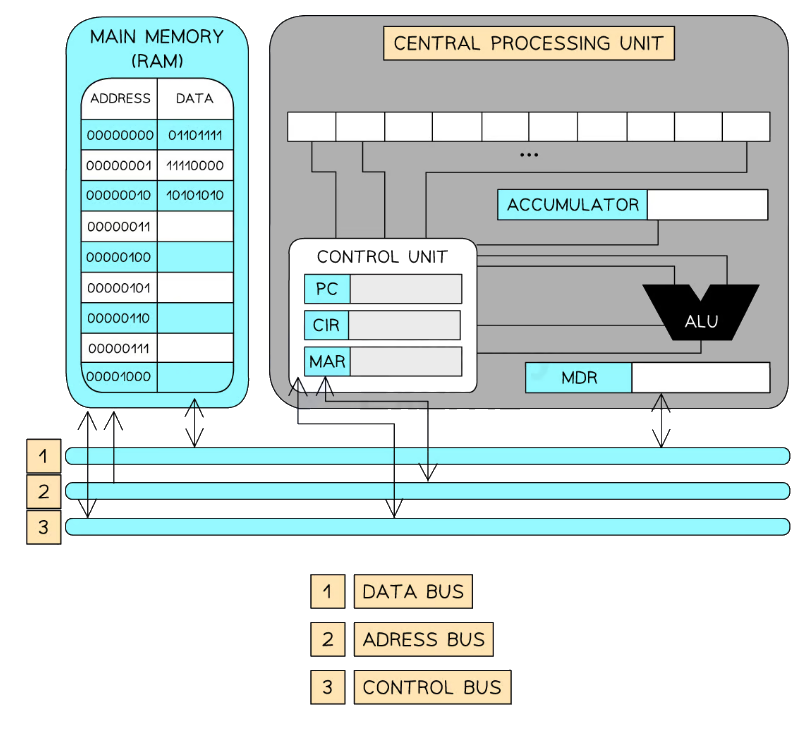
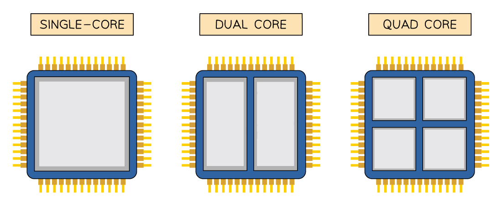
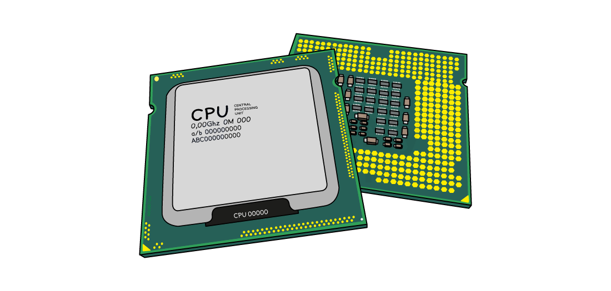
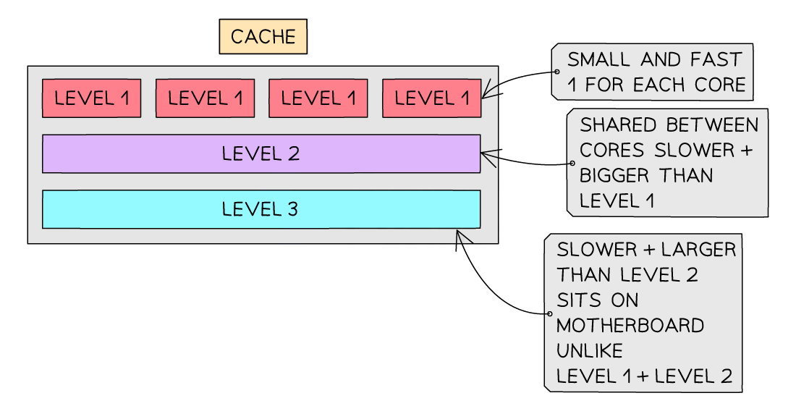
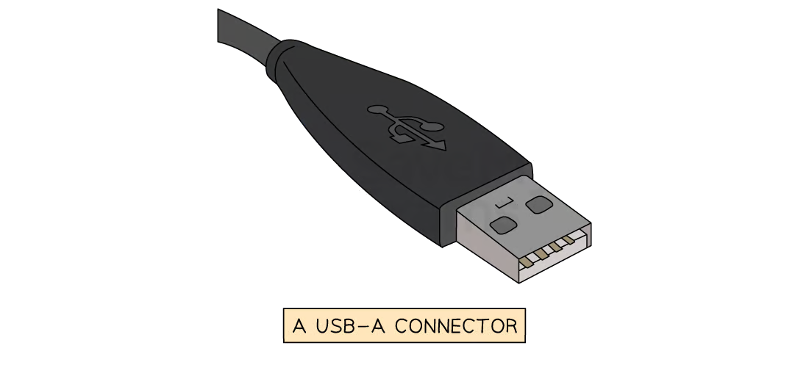
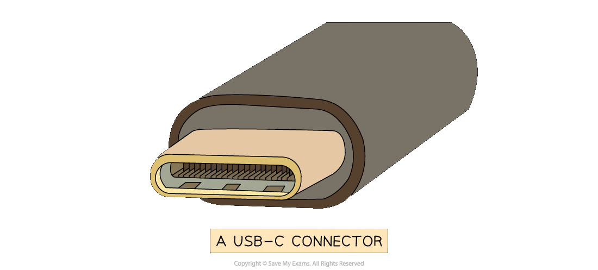
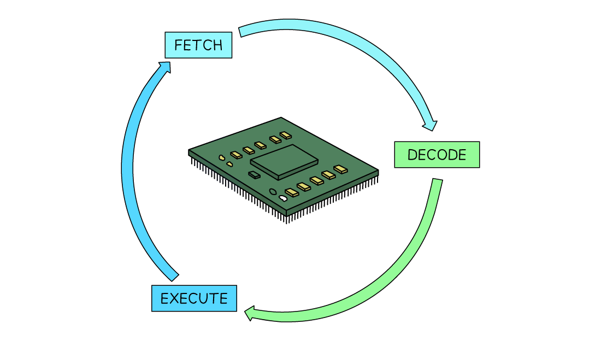
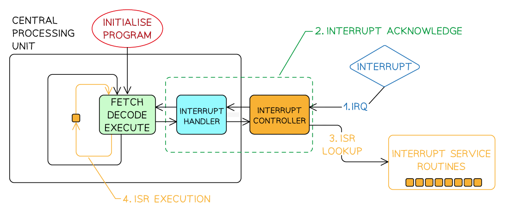
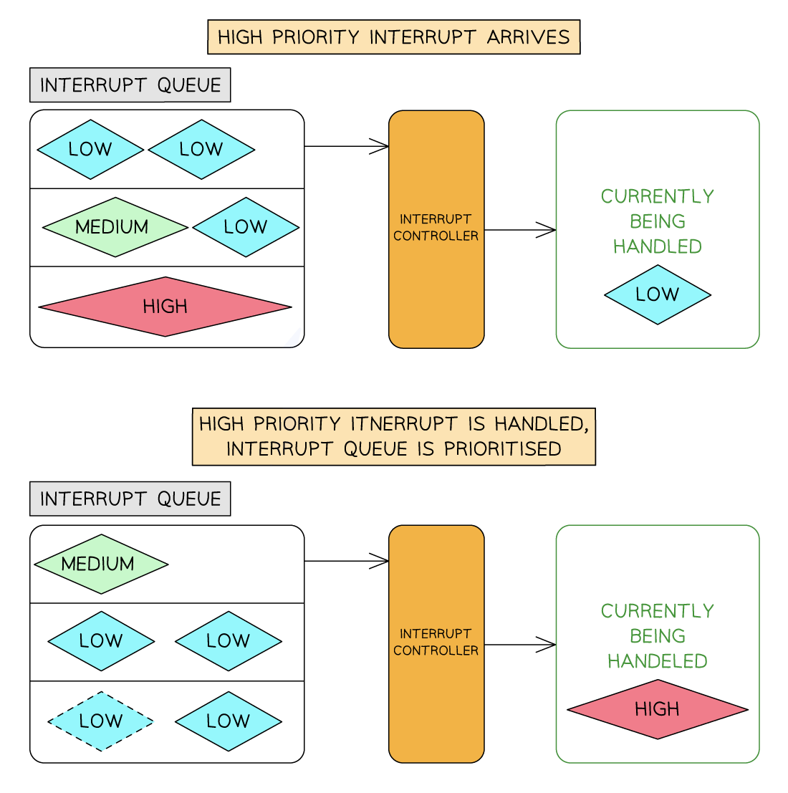

System Architecture
- A special purpose register has a dedicated role within the operation of the CPU
- There are a number of special purpose registers that control or track data
- Examples of special purpose registers includes:
- The Program Counter (PC)
- The Memory Address Register (MAR)
- The Memory Data Register (MDR)
- The Accumulator (ACC)
- Current Instruction Register (CIR)
- Index register (IX)
- Status register (SR)
- For each of the registers you must know
- The name of the register
- Its acronym
- The purpose of the register
| Name | Acronym | Purpose |
|---|---|---|
| Program Counter | PC | - Holds the memory address of the next instructions to be executed - Increments by 1 as the fetch-decode-execute cycle runs |
| Memory Address Register | MAR | - Holds the memory address of where data or instructions are to be fetched from memory |
| Memory Data Register | MDR | - Stores the data or instruction which has been fetched from memory |
| Current Instruction Register | CIR | - Stores the instruction the CPU is currently decoding or executing |
| Accumulator | ACC | - Stores the results of any calculations that have taken place in the Arithmetic Logic Unit (ALU) |
| Index Register | IX | - Stores a value that can be added to an address to get the effective memory address - Used for indexed addressing |
| Status Register | SR | - Stores flags that reflect the outcome of the CPU operations - Holds individual bits (flags) which are set or cleared depending on the result of an instruction (e.g. overflow) |
Components of the CPU
What is the CPU?
- The CPU is responsible for processing all data within the computer
- It is made up of a number of components including:
- Arithmetic and Logic Unit (ALU)
- Control Unit (CU)
- System clock
- Immediate Access Store (IAS)
- Buses

| Component | Full name | Purpose / function |
|---|---|---|
| ALU | Arithmetic Logic Unit | Performs calculations (e.g. add, subtract) and logic operations (e.g. AND, OR) |
| CU | Control Unit | Manages and controls the execution of instructions and directs data flow |
| System Clock | – | Sends out regular pulses to synchronise all CPU operations |
| IAS | Immediate Access Store | Main memory where instructions and data needed by the CPU are temporarily stored |
Buses
- Components within the CPU and wider computer system are connected by buses
- A bus is a set of parallel wires through which data/signals are transmitted from one component to another
- There are 3 types of bus:
- Address - unidirectional, carries location data (addresses), data is written to/read from
- Data - bidirectional, carries data or instructions
- Control - bidirectional, carries commands and control signals to tell components when they should be receiving reads or writes etc..

System Performance
Cores
What is a core?
- A core acts like a mini CPU, it can fetch, decode, and execute instructions on its own
- Each core has its own:
- Control Unit (CU)
- Arithmetic Logic Unit (ALU)
- Registers
- A CPU with more than one core is a multicore CPU
- Allows for parallel processing, multiple instructions are processed at the same time
- Example:
- A dual-core processor has 2 cores
- A quad-core processor has 4 cores
-
More cores = better performance, especially for powerful programs Example:
- A quad-core CPU running at 3GHz
- 4 cores × 3 billion = 12 billion instructions per second
- A dual-core processor isn’t always twice as fast as a single-core
- Some time is used for organising tasks between cores
- Not all tasks can be split across cores
- Some tasks are sequential and must be done step-by-step

Clock speed
What is clock speed?
-
The clock controls the timing of operations inside the CPU
- It constantly switches between 0 and 1, each switch is called a state change
- A state change can represent one step in the fetch-decode-execute cycle
- Some instructions may take more than one cycle
- Clock speed measures how many state changes happen per second
- 1 cycle per second = 1 Hz
- A typical clock speed is around 2.3 GHz
- That’s 2.3 billion cycles per second
- A higher clock speed means the CPU can execute more instructions per second
- This helps the computer run tasks more quickly and efficiently

Cache memory
What is cache memory?
- Cache is part of primary storage
- Stores frequently used data and instructions
- Located closer to the CPU than RAM, so it’s faster to access
- Some cache is built directly into each processor core
- Speeds up the performance of the CPU
- More cache = more data stored nearby = less time waiting for data from RAM
- Example:
- A website you visit often can be stored in the cache
- Next time you visit, it loads faster
- If the website updates, the cached version is updated too
Levels of cache
| Level | Location | Speed | Size |
|---|---|---|---|
| Level 1 (L1) | Inside each CPU core | Fastest | Smallest |
| Level 2 (L2) | Inside or near each core | Fast | Medium |
| Level 3 (L3) | Shared by all cores | Slower than L1/L2 | Largest |

Diagram of the levels within the cacheBus width
What is bus width?
- Bus width is the number of bits a bus can carry at once
- A wider bus can transfer more bits in a single operation
- Example:
- A 32-bit bus transfers 32 bits at a time
- A 64-bit bus transfers 64 bits at a time
- Increases performance, more data can be moved in the same amount of time
- A wider data bus means:
- Faster processing
- More efficient memory access
- Important for high-performance tasks like gaming, video editing, or large data processing
Ports & Interfaces
USB
What is USB?
- The Universal Serial Bus (USB) is a widely used standard for transmitting data between devices
- It is a serial communication method, and it operates asynchronously
- Many devices use USB such as:
- Keyboards
- Mice
- Video cameras
- Printers
- Portable media players
- Mobile phone
- Disk drives
- Network adapters
- Different USB connector types exist for different devices
- The letters refer to the physical shape and design of the USB connector:
- USB-A - Commonly used for flash drives, mice, keyboards, external HDD
- USB-B - Found in printers, scanners, and older external storage devices
- USB-C - Latest standard, known for it’s small size, transfer speeds, and it’s ability to carry power
- The term USB can also be followed by numbers (USB 2.0, 3.0, 4 etc.)
- The numbers refer to the generation of USB technology, which determines the speed and performance:
- USB 1.1 - 12 Mbps (very slow)
- USB 2.0 - 480 Mbps (very common but slower compared to modern versions)
- USB 3.0/3.1/3.2 - 5 Gbps to 20 Gbps (much faster, used for external HDDs and gaming devices)
- USB4/ USB4 2.0 - Up to 80 Gbps (the latest and fastest, used for high speed data transfer)
- When a device is connected to a USB port the computer:
- Automatically detects that the device has been connected
- Looks for the correct driver:
- If the driver is already installed, the appropriate device driver is loaded so that the device can communicate with the computer
- If the device is new, the computer will look for a compatible device driver
- If one cannot be found, the user must download and install an appropriate driver manually


Advantages and disadvantages of USB
| Advantages | Disadvantages |
|---|---|
| Devices are automatically detected and drivers are automatically loaded for communication | The maximum cable length is roughly 5 metres meaning it cannot be used over long distances, limiting its use |
| Cable connectors fit in only one way. This prevents incorrect connections and ensures compatible data transmission |
Older versions of USB have limited transmission rates for example USB 2.0 has 480Mbps |
| As USB usage is standardised, there is a lot of support available online and from retailers | Very old USB standards may not be supported in the near future (USB 1.1, USB 2.0, etc) |
| Several different data transmission rates are supported. The newest transmission rate as of 2022 is USB4 2.0 with 80 Gbps (81,920 Mbps, 170x faster than USB 2.0) | |
| Newer USB standards are backwards compatible with older USB standards |
HDMI
What is HDMI?
- HDMI is a digital port that sends both video and audio output from a computer to HDMI-enabled devices (e.g. TVs, monitors)
- Replaces older VGA analogue systems
- Modern HD TVs and displays require more data because they support:
- Widescreen format (16:9 aspect ratio)
- Higher resolution (e.g. 1920 × 1080 pixels)
- Faster refresh rates (e.g. 120 Hz)
- Wider colour range (millions of colour variations)
- These features need faster and higher bandwidth, which HDMI provides (up to 10 Gbps)
- HDMI uses HDCP (High-bandwidth Digital Content Protection)
- Devices check for an authentication key before sending data (e.g. Blu-ray player to HD TV)
- If the device is authenticated, a “handshake” occurs and data is transmitted
- Helps prevent unauthorised copying of protected content
VGA
What is VGA?
- VGA was Introduced in the late 1980s as the standard for video output
- It is now considered outdated and is being phased out
- Maximum resolution: 640 × 480 pixels
- Refresh rate: up to 60 Hz, but only supports 16 colours at that rate
- If resolution is reduced (e.g. 320 × 200), it can support up to 256 colours
- VGA is an analogue signal, which means:
- Lower image quality over long cables
- More likely to experience signal loss or interference
Fetch-Execute Cycle
F-E stages
What is the fetch-execute cycle?
- The fetch-execute cycle is the process that the CPU goes through repeatedly to process instructions
-
There are 3 stages:
- Fetching an instruction from memory - supplying the address and receiving the instruction from memory
- Decoding the instruction - interpreting the instruction and then reading and retrieving the required data from their addresses
- Executing the instruction - the CPU carries out the required action

-
In the section below, registers and CPU components appear in bold and assembly language is in italics
- During the fetch-execute cycle, the following steps happen:
- Fetch
- The PC is loaded with 0
- The value from the PC (0) is copied to the MAR
- The address in the MAR is sent via the address bus, and a read instruction is sent on the control bus
- The data from that memory location is sent down the data bus to the MDR
- The PC is incremented by 1, ready for the next instruction
- Decode
- The data from the MDR is copied to the CIR
- The CIR splits the instruction into opcode and operand
- The instruction is sent to the CU, which decodes what to do next
- Execute
- The registers used will depend on the instruction:
- INP – value from input device is stored in the ACC
- OUT – value currently in the ACC is sent to the output
- LDA – loads value from RAM into the MDR, then to the ACC
- STA – takes the value from the ACC, moves it to the MDR, then stores it in RAM (location in MAR)
- ADD/SUB – value in RAM is loaded into the MDR, then the calculation happens in the ALU, result stored in the ACC
- BRA/BRZ/BRP – branching instructions are handled by the ALU to check if conditions are met, and the PC is updated accordingly
- The registers used will depend on the instruction:
- Register Transfer Notation (RTN) is a way of describing how data moves between registers in a CPU during the fetch–execute cycle
- It uses symbols to represent registers, and the arrow symbol ← to show data being transferred from one place to another
- It is a shorthand way to show what’s happening inside the CPU
| Symbol | Meaning |
|---|---|
| ← | Data is transferred into a register |
| PC | Program Counter |
| MAR | Memory Address Register |
| MDR | Memory Data Register |
| CIR | Current Instruction Register |
| ACC | Accumulator |
| [ ] | Contents of a register |
| [[ ]] | Contents of the memory location addressed by the register |
Fetch
MAR ← [PC] ; Copy address from Program Counter to MAR
MDR ← [[MAR]] ; Read instruction from memory into MDR
PC ← [PC] + 1 ; Increment PC for the next instruction
CIR ← [MDR] ; Copy instruction from MDR to CIR
Decode
-
No specific register transfer, the CU decodes the instruction in the CIR Execute examples
-
LDA X (Load value from memory location X into ACC):
MAR ← [operand] ; Load address X into MARMDR ← [[MAR]] ; Load data from RAM into MDRACC ← [MDR] ; Copy data into ACC -
STA X (Store value from ACC into memory location X):
MAR ← [operand] ; Load address X into MARMDR ← [ACC] ; Copy data from ACC to MDR[[MAR]] ← [MDR] ; Store MDR value into memory -
ADD X (Add value from memory location X to ACC):
MAR ← [operand]MDR ← [[MAR]]ACC ← [ACC] + [MDR] -
BRZ X (Branch to X if ACC = 0):
If [ACC] = 0 then PC ← [operand]
Interrupts
Interrupt handling
What are interrupts?
- An interrupt is a signal to the processor that stops its current task and performs a different task temporarily
- Interrupts can be hardware events or time-sensitive tasks
- When an interrupt occurs, the processor suspends the current program execution and transfers control to an interrupt service routine
Purpose and role of interrupts
- Real-time Event Handling: hardware errors and signals from input devices e.g. hard disk failure
- Device Communication: alerts from external devices e.g. printer jams and network errors
- Multitasking: suspending processing in one application so that the user can switch to another
Types of interrupts
| Type | Definition | Example |
|---|---|---|
| Hardware Interrupts | Generated by external devices | Keyboard input, mouse movements, disk I/O requests |
| Software Interrupts | Triggered by software or the operating system | Application requests to open a file, division by zero errors |
| Trap Interrupts | Intentionally triggered by a program | Software debugging, handling unexpected error cases |
The interrupt process
- Interrupt Request (IRQ)
- An external device or software generates an interrupt, signalling the processor to stop its current task
- The interrupt controller passes this to the interrupt handler for assessment
- Interrupt acknowledge
- The interrupt handler decides if the interrupt needs to be dealt with n ow or later
- If yes, the current contents of the processor registers are saved in memory
- Interrupt Service Routine (ISR) lookup
- The processor fetches the corresponding Interrupt Service Routine (ISR) associated with the interrupt type
- ISR execution
- The processor transfers control to the ISR and executes the routine to handle the specific interrupt
- Interrupt exit
- After the ISR completes, the processor restores the content of the registers from step 2
- The fetch-decode-execute cycle is resumed

The interrupt process
What is an ISR?
- An ISR is a special function that handles a particular interrupt type
- Each type of interrupt has a corresponding routine
- E.g. printer jam, hard disk failure, file download error, network connection error all have routines to be followed when they happen
- ISRs should be concise, efficient, and carefully designed to minimise the time taken to execute, as they often need to handle time-sensitive events
Interrupt priority and nesting
- Interrupt prioritisation means the processor can acknowledge and switch to resolving a higher-priority interrupt
- Prioritising interrupts is vital because many things can go wrong at the same time
- Lower-priority ISRs may be temporarily suspended until the higher-priority ISR completes the execution
- Nesting of interrupts refers to the ability of the processor to handle interrupts within interrupts
- Proper management of nested interrupts avoids potential conflicts and ensures system stability Nesting of interrupts
Interrupt priority handling

System handling of interrupt priority Explain how the computer handles an interrupt when a key is pressed on the keyboard. [5] Answer- An interrupt flag is raised in the interrupt register [1 mark]
- The system finishes its current fetch-execute cycle [1 mark]
- The interrupt register is checked for a higher priority interrupt [1 mark]
- If a higher priority interrupt is found, the current register contents are pushed to the stack [1 mark]
- The appropriate Interrupt Service Routine (ISR) is executed [1 mark]
- The ISR processes the key press and completes [1 mark]
- The register contents are restored from the stack [1 mark]
- Control is returned to the original process [1 mark]